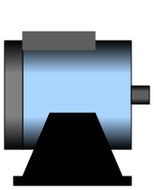
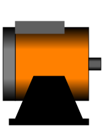
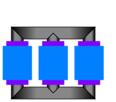
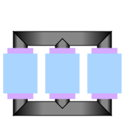

This package contains definitions for the graphical layout of machines. The icons can be utilized by inheriting them in the desired class using "extends" or by directly copying the "icon" layer.
| Name | Description |
|---|---|
|  QuasiStationaryMachine | |
|  FundamentalWaveMachine | |
|  TransientTransformer | |
|  QuasiStationaryTransformer |